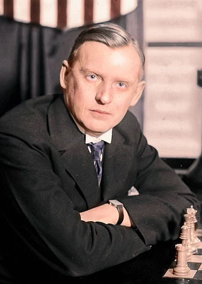
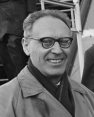
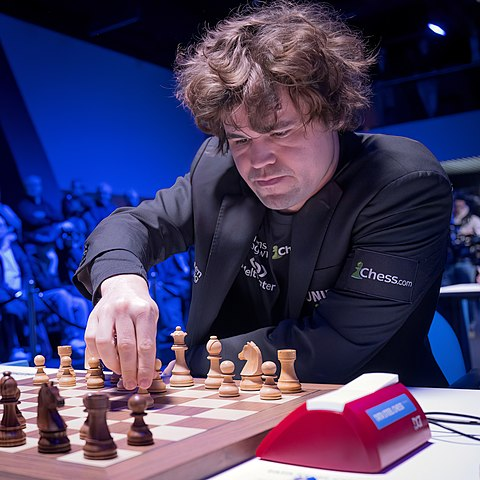

José Raúl Capablanca

Capablanca był uważany za szachowe genialne dziecko. Pierwszym znaczącym jego sukcesem było zwycięstwo w meczu z mistrzem Kuby w 1901 roku. Capablanca miał wówczas 12 lat, jego błyskotliwa gra została szybko zauważona i doceniona. Do dzisiaj jest uważany za jednego z najbardziej utalentowanych szachistów w historii. Szczególnie doceniana jest jego sztuka gry pozycyjnej i rozgrywania końcówek. Capablanca poznał szachy kibicując swojemu ojcu. W całym życiu, nawet jako ekspert szachowy, pozostał w znacznej mierze graczem „naturalnym”, stosunkowo mało czasu poświęcając na przygotowania do turniejów i meczów. W całej karierze Capablanca przegrał w mniej niż pięćdziesięciu oficjalnych partiach. Pozostał niepokonany przez osiem kolejnych lat, od 10 lutego 1916 (porażka z Oscarem Chajesem na turnieju w Nowym Jorku) do 21 marca 1924 (porażka z Richardem Retim na turnieju w Nowym Jorku). Capablanca twierdził, że szachy szybko „umrą na remis”. Przewidywał, że wybitni szachiści osiągną taki poziom znajomości gry, że ich partie zawsze będą kończyć się remisem. Do dzisiaj te prognozy nie spełniły się, chociaż objawy „remisowej śmierci” są widoczne w turniejach z udziałem najsilniejszych graczy.
Aleksander Alechin

Alechin urodził się w bogatej rodzinie. Jego ojciec był posiadaczem ziemskim i deputowanym do Dumy, matka, córka bogatego przemysłowca, była jego pierwszym nauczycielem szachów. Po rozegraniu sławnego turnieju w Petersburgu w 1914 był jednym z pierwszych szachistów, którym przyznano nieformalny wówczas tytuł arcymistrza. Oprócz języka rosyjskiego biegle posługiwał się angielskim, francuskim i niemieckim. Kilka lat po rewolucji październikowej Alechin wyemigrował do Francji, gdzie w 1925 roku otrzymał francuskie obywatelstwo i rozpoczął studia na wydziale prawniczym w Sorbonie. Pomimo że nie ukończył swoich badań nad chińskim systemem więziennictwa, przez resztę życia był tytułowany doktorem prawa. W 1927 roku, po pokonaniu Capablanki, zdobył tytuł mistrza świata, po czym konsekwentnie odmawiał swojemu rywalowi prawa do rewanżu. W 1935 roku utracił swój tytuł na rzecz Maksa Euwego. Przyczyną porażki było najprawdopodobniej nadużywanie alkoholu. Alechin uporał się z tym problemem i w roku 1937 odzyskał tytuł mistrza świata, pokonując Euwego w meczu rewanżowym. Tytuł zachował już do śmierci.
Michaił Botwinnik

Botwinnik urodził się w 1911 roku , w miejscowości Kuokkala (późniejsze Riepino, będące pod jurysdykcją Petersburga), w autonomicznym, ale kontrolowanym przez Imperium Rosyjskie, Wielkim Księstwie Finlandii. Jego rodzice byli rosyjskimi Żydami. Ojciec był technikiem dentystycznym, a matka dentystką, co pozwoliło jego rodzinie zamieszkać poza strefą osiedlenia, gdzie była zmuszona żyć większość Żydów z terytorium Imperium Rosyjskiego. W rezultacie tej przeprowadzki Botwinnik dorastał, mieszkając przy głównej ulicy Petersburga, Newskim ProspekcieJako czternastoletni młodzieniec Botwinnik zyskał rozgłos w świecie szachów, wygrywając w symultanie z ówczesnym mistrzem świata José Raúlem Capablanką. Zapewne ta partia miała znaczący wpływ na rozwój jego talentu. W 1931 roku po raz pierwszy zwyciężył w indywidualnych mistrzostwach ZSRR. Po tytuł mistrza Związku Radzieckiego sięgał jeszcze pięciokrotnie, w latach 1933, 1939, 1941, 1945 i 1952.
Magnus Carlsen

Pierwsze szachowe turnieje rozegrał w roku 2001, szybko ściągając na siebie uwagę szachowych ekspertów. Dwa lata później posiadał już tytuł mistrza międzynarodowego, a w roku 2004 otrzymał tytuł arcymistrza, stając się drugim najmłodszym w historii zawodnikiem (po Siergieju Kariakinie), któremu nadano ten tytuł.